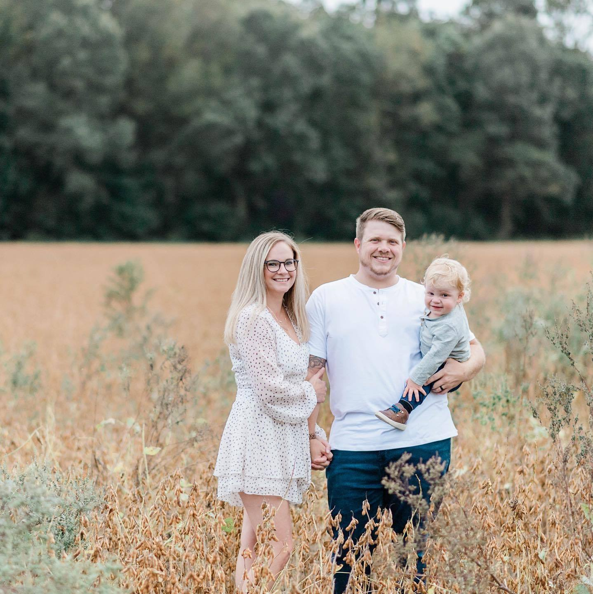

Some of you might be wondering, Why Coding?, and to be able to answer that question, I would first like introduce myself.
Seems like a fair place to begin, right?
First off, my name is Evan, I am a 27 year old father of one(soon to be two!!), and a husband to an amazing wife. 
I was born in Columbia, South Carolina. When I was almost 10, we moved up North. We packed our things and left our cozy house and moved the way to the great state of North Carolina!
See what I did there? You might have heard of where I am from-- The Outer Banks, no? Well then, you must not watch a lot of netflix! I mean, you've heard of the wildly popular show named after my hometown. The Outer Banks, right? Right?!
Anyway, that is where I spent most of my time growing up. It was an amazing place to grow up full of treasure hunts, murder, guns,local rivalaries betweeks the Kooks and the Pogues and of course plenty of hot steamy teenage drama. Just like the show!
Wait a minute! That doesn't seem right! I wish I could say my life was that cool, but honestly growing up there was pretty chill. Slow winters, where we had to spend most of our time finding things to do, and fast and epic summers spending as much time at the beach as possible, in between working our summer gigs. The summers never did last long enough.
After gradauating Highschool, I set off for college. I ended up attending East Carolina University. Maybe more on that later, but to sum it up-- I went there to chase a girl. I never expected to be a ECU Pirate, but here we are. 10 years later, and I am offically settled down in Pirate Nation.
So anyway, I went to ECU with no clue what I wanted to Be When I Grow Up. I origonally thought I would enjoy nursing. My end goal was to be working with Pediatric patients. I always enjoyed being around children growing up and truly thought it could of been a great career for me. I loved the idea of trying to be bright spot in a child's day when they are sick and scared and faced with uncertainty of being in the hospital.
Unfortunately, Chem1000, or whatever it was called happened. I kid you not, it was the most difficult thing I have ever been through. I spent countless hours studying and working on the homework just to score 60s and 70s at best. Then came the FIRST EXAM...
Would you believe me if I told you that within the first fifteen minutes of my first ever college exam that someone threw up all over the classroom?
Fun fact, they did! And the craziest part was that no one batted an eye! I mean no one! Even the people sitting next to this poor soul just scooted their bodies as far away as possible and went back to the exam. After, witnessing something so horrifying I turned to my buddy and told him I wasn't sure if I was ready for college.
After the exam, I nervously waited for the results. The results came in later that evening. 57% I felt like a failure, I felt hopeless, I felt like quitting college already after two weeks.